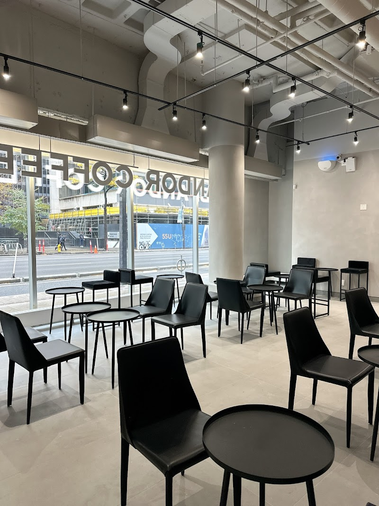
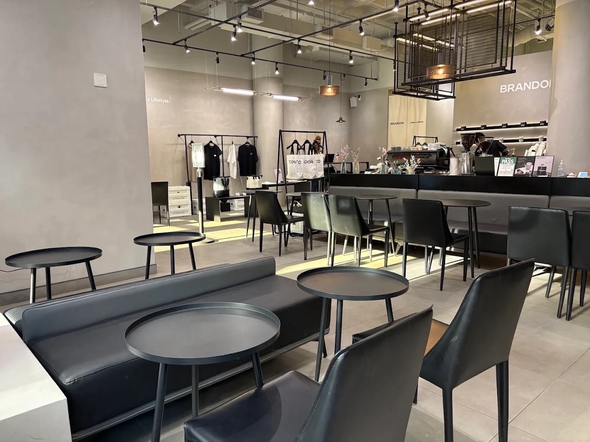
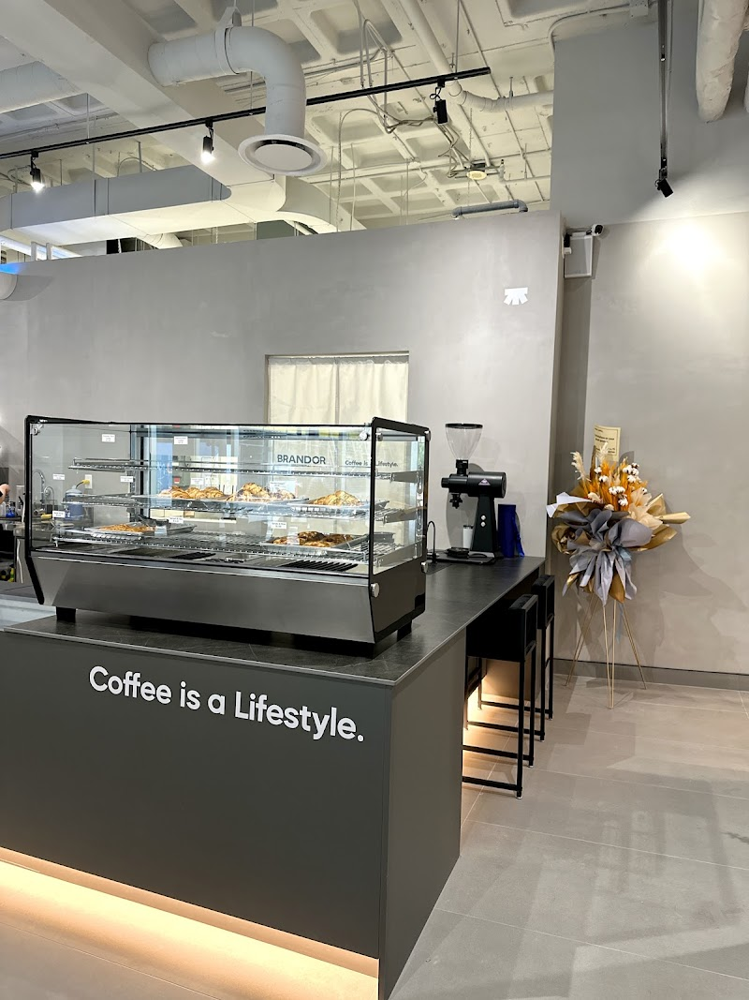

Brandor Coffee is a versatile and aesthetic café in Toronto that blends coffee culture with a lifestyle-focused experience. During the day, it function as a calm and study-friendly space, while later on it becomes more social and lively. With its modern design, large windows, and emphasis on “coffee is a lifestyle,” it attracts both students and casual visitors.
100 University Ave Suite 106, Toronto, ON M5J 1V6
Monday-Friday: 8am-6pm, Saturday-Sunday: 9:30am-6pm Quieter and more study-friendly during the day and busier in the afternoon and evening. For studying, it’s best to visit during earlier hours when the space is calmer.
It only have limited outlets in certain seatings.
Offers free Wi-Fi for customers and is considered a work-friendly, study-friendly spot. It features a quiet, aesthetic atmosphere with available seating.

Brandor Coffee has a lot of seats available, but the way they are arranged is better for relaxing or chatting, not for studying for a long time. The seating is comfortable for short to medium study sessions or casual work.

Limited space for spreading out materials. Open seating with natural light

Seating is not for long period studying. It's comfy but not as relaxing long stay seat.
Comfortable seating for longer sessions.

Brandor Coffee offers a simple but high-quality menu with a strong focus on its well-presented drinks and consistent quality, making it a popular choice for coffee lovers.
The café is especially known for its Instagram-worthy drinks, making it a popular spot for both studying and social visits.
Brandor Coffee features a dark, modern, and aesthetic interior, balanced with natural light from its large windows. The space feels both stylish and versatile, suitable for working, relaxing, or meeting with others.
It works well for studying during earlier hours.
The music goes with the aesthetic of the cafe but might be distracting for those needing a very quiet study environment.
Personal Comment
Brandor Coffee is a great spot to enjoy high-quality coffee in a modern and stylish setting. It works well for studying earlier in the day, but as it gets busier, it becomes more of a hangout space with friends. It’s better for shorter study sessions rather than long periods of studying.